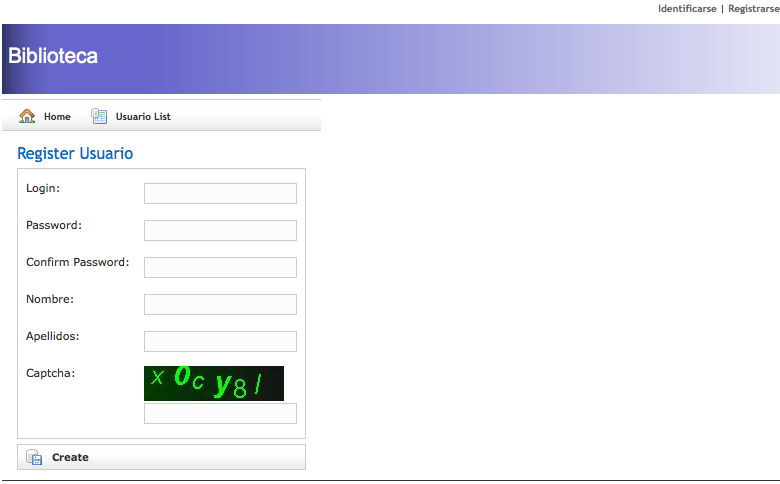

Seguridad
Llegados a este punto, debemos dar un paso adelante para mejorar nuestra aplicación y que mejor que añadiéndole seguridad desde varios puntos de vista, ya que hasta el momento, nuestro método para identificar a los usuarios era demasiado simple y totalmente inseguro.
Uno de los objetivos de la seguridad en una aplicación es establecer una forma efectiva de identificar a los usuarios (autenticación), ya que se necesita saber de alguna forma que el usuario que está tratando de entrar a nuestra aplicación, es quien verdaderamente está diciéndonos. Esto se suele hacer típicamente especificando un nombre de usuario y una contraseña.
Además, otro de los objetivos hablando en términos de seguridad es saber que usuarios tienen acceso a cada una de las partes de la aplicación (control de acceso). Por ejemplo, un usuario de tipo profesor o socio no debe tener acceso a la gestión de otros usuarios.
En esta sesión, veremos como implementar la seguridad de nuestra aplicación de varias formas. En primer lugar, utilizaremos un método propio desde cero y posteriormente veremos como utilizar el plugin Shiro.
Autenticación
El proceso de autenticación en una aplicación consiste en la identificación por parte de los usuarios para comprobar que realmente son quienes dicen ser. En este proceso también podemos incluir la parte en la que el usuario abandona la aplicación.
Hasta el momento ese proceso en nuestra aplicación consiste simplemente en seleccionar uno de los usuarios listados en un seleccionable, lo cual no es nada seguro. En primer lugar vamos a modificar esta forma de entrar en la aplicación por otra en la cual se nos solicite el nombre de usuario (login) y la contraseña (password).
En primer lugar debemos cambiar la vista correspondiente (grails-app/views/usuario/login.gsp) para indicarle la nueva forma de acceso a nuestra aplicación, que ahora quedaría así:
<html>
<head>
<meta http-equiv="Content-Type" content="text/html; charset=UTF-8"/>
<meta name="layout" content="main"/>
<title>Login</title>
</head>
<body>
<div class="body">
<g:if test="${flash.message}">
<div class="message">
${flash.message}
</div>
</g:if>
<p>
Bienvenido a la aplicación Biblioteca. Por favor, identifícate.
</p>
<form>
<br/>
<label for="login">Nombre de usuario</label><br/><input type="text" maxlength="20" id="login" name="login" value="${fieldValue(bean:usuarioInstance,field:'login')}"/>
<br/>
<label for="password">Contraseña</label><br/><input type="password" maxlength="20" id="password" name="password"/>
<br/>
<div class="buttons">
<span class="button"><g:actionSubmit value="Login" action="handleLogin"/></span>
</div>
</form>
</div>
</body>
</html>
Y por supuesto, también debemos modificar el controlador de la clase de dominio Usuario para que ahora se compruebe no sólo el nombre de usuario escogido sino también la contraseña. El método handleLogin() quedaría así:
def handleLogin = {
def usuario = Usuario.findWhere(["login":params.login, "password":params.password, "active":true])
if (!usuario) {
flash.message = "El usuario ${params.login} no existe"
redirect(controller: 'usuario', action:'login')
return
}
else {
session.usuario = usuario
redirect(controller:'operacion')
}
}
Si te fijas, comprobarás como simplemente hemos cambiado una línea en el controlador para que ahora se compruebe tanto el nombre de usuario como la contraseña y que la cuenta del usuario esté activa. Sin embargo, todavía queda algo por hacer y es referente a la forma con la que la contraseña de los usuarios se almacena en la base de datos.
Hasta este momento, la contraseña de los usuarios se almacena en forma de texto plano en la tabla correspondiente de la base de datos, lo cual se puede considerar como una falta muy grave en temas de seguridad y de protección de datos, ya que muchos usuarios utilizan siempre la misma contraseña para diferentes sistemas de autenticación, con lo que si nuestro sistema es intervenido por algún agente externo, éste tendrá acceso a estas contraseñas.
Para solucionar esto, debemos encriptar la contraseña antes de insertar los datos del usuarios, lo cual habitualmente se consigue mediante técnicas hash. En Grails vamos a utilizar una técnica llamada DigestUtils que utiliza el paquete org.apache.commons.codec.digest.DigestUtils. Esta clase contiene una serie de métodos para producir diversos tipos de cadenas encriptadas:
- DigestUtils.md5(java.lang.String cadena), que produce una cadena de 16 elementos de tipo byte[]
- DigestUtils.md5Hex(java.lang.String cadena), utiliza también MD5, pero en este caso creará una cadena de 32 caracteres hexadecimales
- DigestUtils.shaHex(java.lang.String cadena), también devuelve una cadena de 32 caracteres hexadecimales pero utiliza SHA-1 como método de encriptación
Para encriptar la contraseña de los usuarios, en primer lugar debemos modificar la clase de dominio, puesto que estamos indicando que la longitud de la cadena no puede ser superior a 20 caracteres, lo que una vez encriptada la contraseña será insuficiente. Vamos a modificar este tamaño a 255.
A continuación, modificaremos los métodos correspondientes en el controlador de la clase Usuario para que a partir de ahora encripte la contraseña utilizando el método DigestUtils.md5Hex(pwd). El método save() quedaría así:
def save = {
params.password = DigestUtils.md5Hex(params.password)
def usuarioInstance = usuarioService.altaUsuario(params)
if(!usuarioInstance.hasErrors()) {
flash.message = "${message(code: 'default.created.message',
args: [message(code: 'usuario.label', default: 'Usuario'), usuarioInstance.id])}"
redirect(action:show,id:usuarioInstance.id)
}
else {
render(view:'create',model:[usuarioInstance:usuarioInstance])
}
}
La modificación de la contraseña para que sea encriptada debe ser realizada también en el método update(). No debemos olvidar también importar el paquete org.apache.commons.codec.digest.DigestUtils.
Debemos modificar también el fichero BootStrap.groovy para que la contraseña sea también encriptada antes de que sea insertada en la base de datos.
def usuario1 = new Usuario(login:'frangarcia',
password:DigestUtils.md5Hex('mipassword'),
nombre:'Francisco José',
apellidos:'García Rico',
tipo:'administrador',
email:'fgarcia@ua.es,
active:true)
Por último, debemos actualizar el método handleLogin() para comprobar los datos del usuario que intenta identificarse para que la contraseña sea encriptada antes de realizar dicha comprobación. Modificamos la línea correspondiente por esta otra def usuario = Usuario.findWhere(["login":params.login, "password":DigestUtils.md5Hex(params.password), "active":true]).
Ahora sí, nuestra aplicación empieza a tener mejor forma en cuanto a lo relativo a la seguridad de la misma, ya que las contraseñas de los usuarios no aparecen en texto plano.
Registro de usuarios con CAPTCHAS
El siguiente paso en nuestra aplicación va a ser añadir la posibilidad de que sean los propios usuarios quienes se registren en la aplicación. Por supuesto, este registro no permitirá a la persona que quiera registrarse seleccionar el tipo de usuario, de tal forma que los nuevos usuarios serán automáticamente del tipo socio. Además, veremos como instalar un plugin a nuestra aplicación para añadir a este registro de nuevos usuarios la utilización de la técnica de CAPTCHA para evitar el registro automatizado de nuevos usuarios.
La típica prueba consiste en que el usuario introduzca un conjunto de caracteres que se muestran en una imagen distorsionada que aparece en pantalla, que supuestamente una máquina no puede entender y que sólo un humano podrá escribir la secuencia correcta. Últimamente se han añadido otro tipo de pruebas como archivos de audio, preguntas de cálculo matemático, o de cualquier otro tipo.
Fuente: Artículo de la Wikipedia en Español
Empecemos entonces instalando un plugin que nos va a permitir realizar este tipo de comprobaciones a la hora de registrar nuevos usuarios. Grails dispone de un potente y eficaz sistema de plugins realizado en su mayoría por la, cada vez más extensa, comunidad de usuarios que facilita la ampliación de las aplicaciones.
El plugin que vamos a instalar se llama jcaptcha y para ello debemos escribir en línea de comandos grails install-plugin jcaptcha. Este plugin creará automáticamente un controlador y un servicio que posteriormente podremos utilizar para realizar las comprobaciones correspondientes.
La instalación de este plugin requiere también algunas modificaciones en el archivo de configuración grails-app/conf/Config.groovy. En este archivo debemos añadir el siguiente código para la generación de las imágenes correspondientes a los captchas.
import java.awt.Font
import java.awt.Color
import com.octo.captcha.service.multitype.GenericManageableCaptchaService
import com.octo.captcha.engine.GenericCaptchaEngine
import com.octo.captcha.image.gimpy.GimpyFactory
import com.octo.captcha.component.word.wordgenerator.RandomWordGenerator
import com.octo.captcha.component.image.wordtoimage.ComposedWordToImage
import com.octo.captcha.component.image.fontgenerator.RandomFontGenerator
import com.octo.captcha.component.image.backgroundgenerator.GradientBackgroundGenerator
import com.octo.captcha.component.image.color.SingleColorGenerator
import com.octo.captcha.component.image.textpaster.NonLinearTextPaster
.......
jcaptchas {
image = new GenericManageableCaptchaService(
new GenericCaptchaEngine(
new GimpyFactory(
new RandomWordGenerator(
"abcdefghijklmnopqrstuvwxyz1234567890"
),
new ComposedWordToImage(
new RandomFontGenerator(
20, // min font size
30, // max font size
[new Font("Arial", 0, 10)] as Font[]
),
new GradientBackgroundGenerator(
140, // width
35, // height
new SingleColorGenerator(new Color(0, 60, 0)),
new SingleColorGenerator(new Color(20, 20, 20))
),
new NonLinearTextPaster(
6, // minimal length of text
6, // maximal length of text
new Color(0, 255, 0)
)
)
)
),
180, // minGuarantedStorageDelayInSeconds
180000 // maxCaptchaStoreSize
)
}
Una vez ya tenemos instalado el plugin jcaptcha, lo siguiente que vamos a hacer es crear la vista correspondiente para el registro de los nuevos usuarios. Este registro será prácticamente idéntico a cuando un administrador añade usuarios, con lo que vamos a copiar el archivo grails-app/views/usuario/create.gsp en un nuevo archivo llamado grails-app/views/usuario/register.gsp.
En el registro de los nuevos usuarios, además del captcha correspondiente, vamos a pedirles también a quienes deseen registrarse en nuestro sistema que introduzcan una confirmación de la contraseña, algo que también es típico en este tipo de sistemas. El siguiente será el código de la parte del formulario del archivo register.gsp.
<g:form action="handleRegister" method="post" >
<div class="dialog">
<table>
<tbody>
<tr class="prop">
<td valign="top" class="name">
<label for="login"><g:message code="usuario.login.label" default="Login" />:</label>
</td>
<td valign="top" class="value ${hasErrors(bean:usuarioInstance,field:'login','errors')}">
<input type="text" maxlength="20" id="login" name="login" value="${fieldValue(bean:usuarioInstance,field:'login')}"/>
</td>
</tr>
<tr class="prop">
<td valign="top" class="name">
<label for="password"><g:message code="usuario.password.label" default="Password" />:</label>
</td>
<td valign="top" class="value ${hasErrors(bean:usuarioInstance,field:'password','errors')}">
<input type="password" maxlength="20" id="password" name="password"/>
</td>
</tr>
<tr class="prop">
<td valign="top" class="name">
<label for="confirm"><g:message code="usuario.confirm.label" default="Confirm Password" />:</label>
</td>
<td valign="top">
<input type="password" maxlength="20" id="confirm" name="confirm"/>
</td>
</tr>
<tr class="prop">
<td valign="top" class="name">
<label for="nombre"><g:message code="usuario.nombre.label" default="Nombre" />:</label>
</td>
<td valign="top" class="value ${hasErrors(bean:usuarioInstance,field:'nombre','errors')}">
<input type="text" id="nombre" name="nombre" value="${fieldValue(bean:usuarioInstance,field:'nombre')}"/>
</td>
</tr>
<tr class="prop">
<td valign="top" class="name">
<label for="apellidos"><g:message code="usuario.apellidos.label" default="Apellidos" />:</label>
</td>
<td valign="top" class="value ${hasErrors(bean:usuarioInstance,field:'apellidos','errors')}">
<input type="text" id="apellidos" name="apellidos" value="${fieldValue(bean:usuarioInstance,field:'apellidos')}"/>
</td>
</tr>
<tr class="prop">
<td valign="top" class="name">
<label for="email"><g:message code="usuario.email.label" default="Email" /></label>
</td>
<td valign="top" class="value ${hasErrors(bean: usuarioInstance, field: 'email', 'errors')}">
<g:textField name="email" value="${usuarioInstance?.email}" />
</td>
</tr>
<tr class="prop">
<td valign="top" class="name">
<label for="tipo">Captcha:</label>
</td>
<td valign="top" class="value ${hasErrors(bean:usuarioInstance,field:'responseCaptcha','errors')}">
<jcaptcha:jpeg name="image" /><br>
<g:textField name="responseCaptcha" value="" /><br>
</td>
</tr>
</tbody>
</table>
</div>
<div class="buttons">
<span class="button"><input class="save" type="submit" value="${message(code: 'default.button.create.label', default: 'Create')}" /></span>
</div>
</g:form>
Lo siguiente que debemos hacer es añadir los correspondientes métodos en el controlador de la clase Usuario, en este caso los métodos register() y handleRegister(). Este último será quien se encargue de comprobar que la pregunta referente al captcha ha sido correctamente contestada y que la confirmación de la contraseña coincida con la contraseña. También debemos crear una variable llamada jcaptchaService en la parte superior del controlador, que será quien se encargue de comprobar la validez de la respuesta. Aquí volvemos a encontrarnos con el paradigma de Grails que indica convención sobre configuración, puesto que nombrando esta variable como jcaptchaService, nos olvidamos de más configuración. El código de estos métodos quedaría así:
def jcaptchaService
...........
def register = {
def usuarioInstance = new Usuario()
usuarioInstance.properties = params
return ['usuarioInstance':usuarioInstance]
}
def handleRegister = {
def usuarioInstance = new Usuario()
//Proceso el captcha
if (!jcaptchaService.validateResponse("image", session.id, params.responseCaptcha)){
flash.message = "El captcha no es correcto"
redirect(controller:'usuario', action:'register')
}
else{
//Compruebo la confirmación de la contraseña
if(params.password != params.confirm) {
flash.message = "La confirmación de la contraseña no coincide con la contraseña"
redirect(action:register)
}
else{
params.password = DigestUtils.md5Hex(params.password)
params.tipo = "socio"
usuarioInstance = usuarioService.altaUsuario(params)
if(!usuarioInstance.hasErrors()) {
session.usuario = usuarioInstance
redirect(controller:'operacion')
}
else {
render(view:'register',model:[usuarioInstance:usuarioInstance])
}
}
}
}
En primer lugar comprobamos que la respuesta introducida al desafío del captcha es correcta para posteriormente chequear que la confirmación a la contraseña se ha introducido correctamente. En caso de pasar ambos tests, se guarda la información del usuario en la base de datos y se autentica directamente al usuario en la aplicación para que pueda empezar a operar sobre ella. Podemos comprobar el funcionamiento de este registro de usuarios accediendo a http://localhost:8080/biblioteca/usuario/register.
Por último, simplemente debemos mostrar a los usuarios de nuestra aplicación algún enlace donde poder registrarse. Esto se suele poner junto al enlace correspondiente a la identificación, es decir, en el encabezado de nuestra aplicación, con lo que vamos a modificar el archivo grails-app/views/common/_header.gsp para que junto a la palabra Identificarse, aparezca también un enlace para que un usuario pueda registrarse en la aplicación.
<div id="menu">
<nobr>
<g:if test="${session.usuario}">
<b>${session.usuario?.nombre} ${session.usuario?.apellidos}</b> |
<g:link controller="usuario" action="logout"><g:message code="encabezado.logout"/></g:link>
</g:if>
<g:else>
<g:link controller="usuario" action="login"><g:message code="encabezado.login"/></g:link> |
<g:link controller="usuario" action="register">Registrarse</g:link>
</g:else>
</nobr>
</div>
En la siguiente imagen podemos ver como quedaría nuestra aplicación cuando un usuario desea registrarse en ella.

Control de acceso: Filtros
La segunda parte de cualquier sistema de autenticación, es saber quien puede hacer que en una aplicación. Por ejemplo, un usuario de tipo socio nunca va a poder crear nuevos usuarios en el sistema. En Grails podemos conseguir este tipo de restricciones gracias a los filtros de los controladores.
Ya en la sesión 7 vimos una primera introducción a los filtros cuando indicábamos que determinadas operaciones sólo estaban permitidas a los usuarios de tipo administrador. Ahora vamos a ampliar esta seguridad que ya añadimos en su momento.
En nuestra aplicación, sólo hay 3 lugares donde los usuarios no identificados no van a tener ningún problema en acceder. Estos lugares son la página inicio de la aplicación, la página donde se pueden registrar y por último, la página donde se deben identificar. El resto, deberán estar protegidas ante el acceso de usuarios no autorizados.
Tal y como vimos en la sesión 7, los filtros deben crearse en el directorio grails-app/conf y el nombre del filtro debe terminar por la palabra Filters. Nuestro filtro se va a llamar, por razones obvias, SecurityFilters. Este será el esqueleto de los filtros que creemos en la aplicación.
package biblioteca
class SecurityFilters {
def filters = {
......
}
}
Los filtros pueden ser definidos de dos formas diferentes:
- Especificando el controlador y la acción
- Especificando la URI
Además, también vamos a poder especificar el instante en el que queremos que se ejecute el filtro:
- before, el filtro se ejecuta antes que la acción dada
- after, el filtro se ejecuta después de la acción dada
- afterView, el filtro se ejecuta después de que la vista sea renderizada
Vamos a ver como quedaría el filtro que protege del acceso no permitido a nuestra aplicación.
package biblioteca
class SecuridadFilters {
def filters = {
bibliotecaFilter(controller:'*', action:'*') {
before = {
if (!session.usuario
&& !((controllerName.equals('usuario')
&& actionName.equals('login'))
|| (controllerName.equals('usuario')
&& actionName.equals('handleLogin'))
|| (controllerName.equals('usuario')
&& actionName.equals('register'))
|| controllerName.equals('jcaptcha')
)){
redirect(controller:'usuario', action:'login')
return false
}
}
}
}
}
Con este filtro, estamos protegiendo completamente nuestra aplicación del acceso de usuarios no identificados y salvo en los casos expuestos en el filtro, el usuario será redirigido a la pantalla de identificación.
Para realizar estas comprobaciones, podemos hacer uso de las variables controllerName que nos indica el controlador al que estamos accediendo y actionName que utilizaremos para referirnos a la acción del controlador referida.
Podemos especificar tanto el parámetro controlador como la acción de la siguiente forma:
def filters = {
bibliotecaFilter(controller:'usuario|libro', action:'create|save|edit|update|delete') {
...
}
También podemos especificar filtros especificando la URI. Un ejemplo podría ser el siguiente, en donde se redirije al usuario a un nuevo proceso de registro.
otroFilter(uri:'/usuario/register') {
before = {
redirect(controller:'usuario', action:'registernew')
}
}
Aquí Grails inyecta una serie de propiedades para hacerlas accesibles en los filtros como son:
- request
- response
- session
- servletContext
- applicationContext
- params
Sin embargo, esta solución puede no ser suficiente cuando estamos desarrollando sistemas con varios perfiles de usuario y cada uno de ellos tiene una serie de operaciones permitidas y prohibidas. Por ejemplo, en nuestra aplicación un usuario de tipo administrador no debería ser capaz de realizar ninguna operación y simplemente encargarse de la gestión de los usuarios.
En la siguiente sección, vamos a ver como utilizar el plugin JSecurity para implementar un sistema de seguridad con varios perfiles, cada uno de ellos con unos permisos determinados.
Plugin de seguridad Shiro
Si necesitamos ayuda con nuestra aplicación para la creación de usuarios con determinados permisos, posiblemente la mejor solución nos la proporcione el plugin Shiro. Este plugin implementa una solución perfecta para la creación de usuarios y los roles que éstos pueden adquirir dentro de la aplicación con los correspondientes permisos.
En primer lugar, vamos a realizar la instalación del plugin. Para ello ejecutamos en línea de comandos grails install-plugin shiro y posteriormente el comando grails shiro-quick-start. Este segundo comando copiará una serie de clases de dominio, controladores y vistas en nuestra aplicación que nos servirán para realizar el proceso de autenticación en la aplicación.
Clases de dominio de Shiro
El plugin Shiro utilizar dos clases de dominio para realizar la implementación de su sistema de seguridad. Estas dos clases de dominio son las siguientes:
ShiroUser
Esta clase es la que se encarga de la gestión de los usuarios del sistema. Los atributos de esta clase son:
| Atributo | Descripción |
|---|---|
| username | Nombre de usuario |
| passwordHash | Contraseña |
| roles | Los diferentes roles que puede adquirir el usuario en la aplicación |
| permissions | Cadenas de texto especificando los permisos especiales de este usuario |
ShiroRole
Esta clase especifica los roles de la aplicación. En nuestro caso necesitaríamos cuatro roles: administrador, bibliotecario, profesor y socio.
| Atributo | Descripción |
|---|---|
| name | Nombre del rol o perfil |
| users | Los diferentes usuarios con este rol |
| permissions | Cadenas de texto especificando los permisos especiales de este rol |
Carga de datos
Una vez ya conocemos las diferentes clases incluidas en la instalación del plugin Shiro, vamos a crear algunos datos de ejemplo en la aplicación y modificar el sistema de registro para comprobar la potencia de este plugin.
En el ejemplo que vamos a desarrollar, vamos a utilizar dos tipos de usuarios, los administradores y los profesores. Para ello, vamos a utilizar el archivo BootStrap.groovy para crear algunos datos de ejemplo. Para poder utilizar la clase Sha1Hash debemos importar la librería import org.apache.shiro.crypto.hash.Sha256Hash el inicio del archivo BootStrap.groovy.
def adminRole = new ShiroRole(name:'Administrador')
adminRole.addToPermissions("*:*")
adminRole.save()
def profeRole = new ShiroRole(name:'Profesor')
profeRole.addToPermissions("libro:list")
profeRole.addToPermissions("libro:show")
profeRole.save()
def adminUser = new ShiroUser(username:'admin', passwordHash:new Sha256Hash('password').toHex())
adminUser.addToRoles(adminRole)
adminUser.save()
def profeUser = new ShiroUser(username:'profesor', passwordHash:new Sha256Hash('password').toHex())
profeUser.addToRoles(profeRole)
profeUser.save()
Con el código anterior, hemos creado dos usuarios cada uno con un rol diferente. Podemos comprobar como el sistema nos autentica correctamente si accedemos a la dirección http://localhost:8080/biblioteca/auth e intentamos entrar con los usuarios recién creados.
Además, también hemos creado un par de roles para cada uno de estos usuarios, de tal forma que en lugar de asignarles los permisos a los usuarios se los hemos asignado a los roles, con lo que podemos ser más genéricos. Además, con el comando grails shiro-quick-start, también se ha creado un filtro en el directorio grails-app/conf llamado ShiroSecurityFilters.groovy con el siguiente contenido.
class SecurityFilters {
def filters = {
all(uri: "/**") {
before = {
// Ignore direct views (e.g. the default main index page).
if (!controllerName) return true
// Access control by convention.
accessControl()
}
}
}
}
Con el código de este filtro conseguimos que la única página que se vea sin estar autenticados en el sistema sea la página de inicio de la aplicación, http://localhost:8080/biblioteca y para el resto de páginas necesitaremos estar autenticados para poder interactuar con la aplicación. Y es ahí donde entra en funcionamiento los permisos que hemos añadido a cada uno de los roles y por ende, a los usuarios.
Etiquetas GSP
El plugin Shiro permite la utilización de una serie de etiquetas para determinadas operaciones. Estas etiquetas son las siguientes:
- <shiro:isLoggedIn>: comprueba si el usuario está identificado en el sistema
- <shiro:isNotLoggedIn>: comprueba si el usuario no está identificado en el sistema
- <shiro:authenticated>: etiqueta sinónima a isLoggedIn
- <shiro:notAuthenticated>: etiqueta sinónima a isNotLoggedIn
- <shiro:user>: sólo se muestra el contenido si el usuario es reconocido con la utilización de la opción Remember me
- <shiro:principal>: muestra el nombre de usuario del usuario registrado
- <shiro:hasRole>: sólo se muestra el contenido si el usuario está autenticado y además tiene un rol asignado
Podemos modificar el contenido de la plantilla _header.gsp para mostrar un enlace para identificarse en el sistema o indicar el nombre del usuario junto con un enlace para abandonar la aplicación. El nuevo encabezado quedaría así:
<div id="menu">
<nobr>
<shiro:isLoggedIn>
<div>
<shiro:principal/>
(
<g:link controller="auth" action="signOut">
<g:message code="encabezado.logout"/>
</g:link>
)
</div>
</shiro:isLoggedIn>
<shiro:isNotLoggedIn>
<div>
<g:link controller="auth" action="login">
<g:message code="encabezado.login"/>
</g:link>
</div>
</shiro:isNotLoggedIn>
</nobr>
</div>